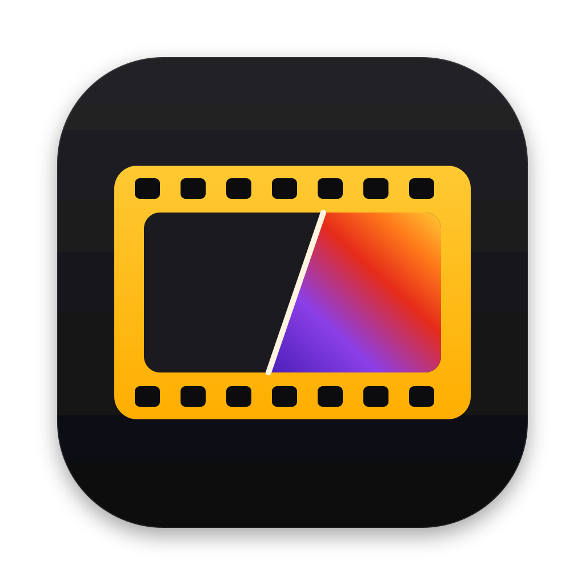
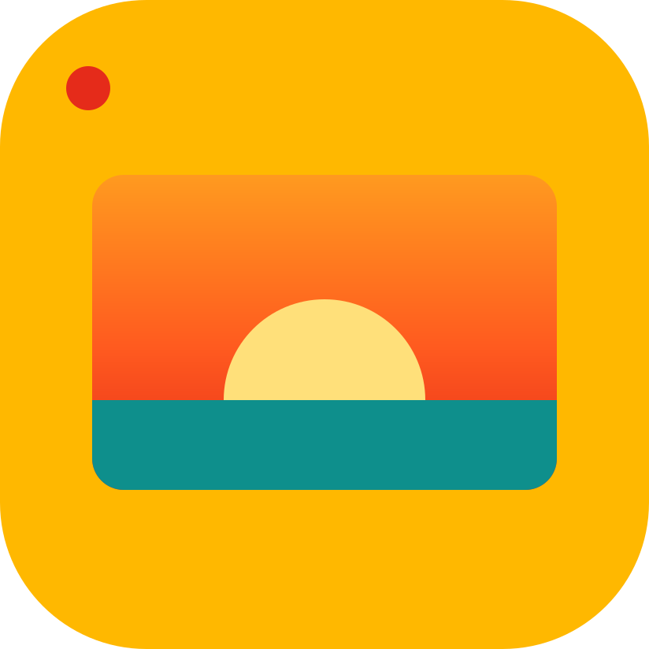
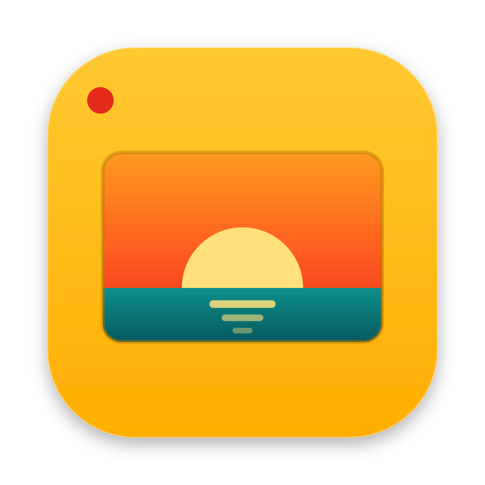
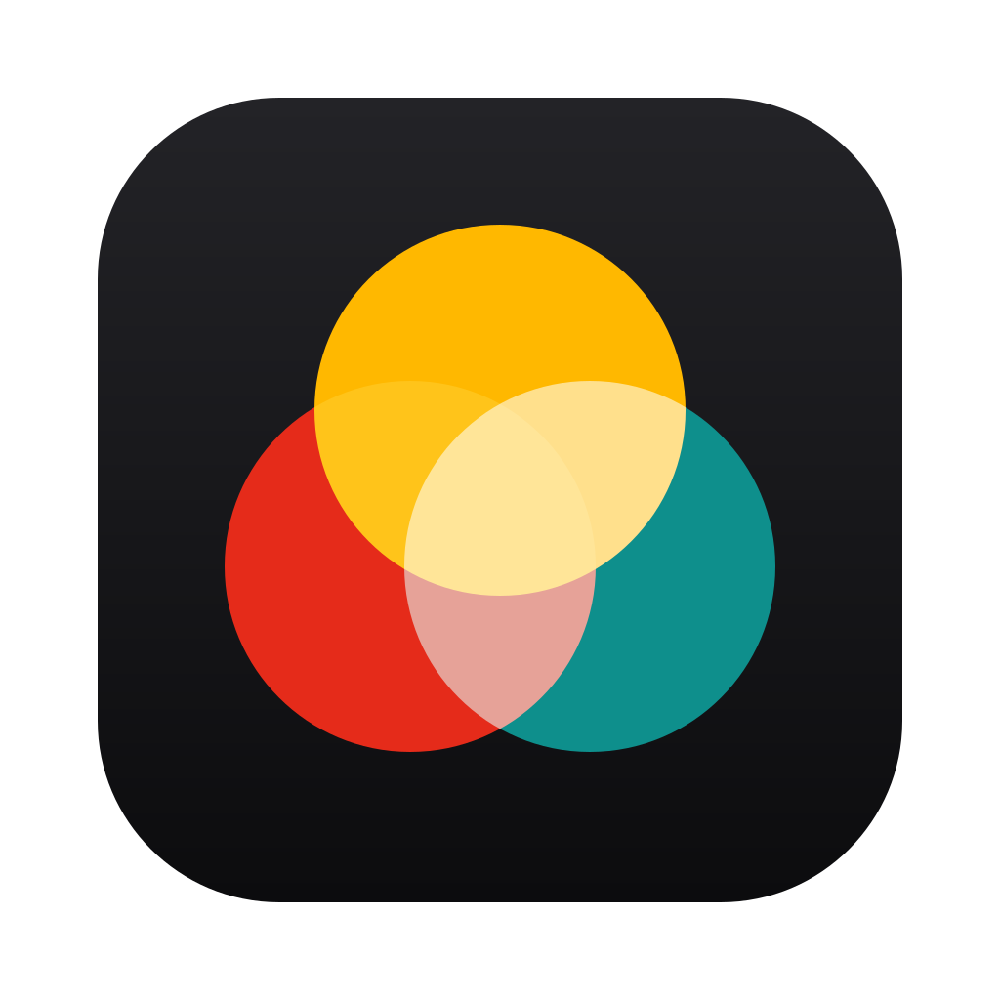
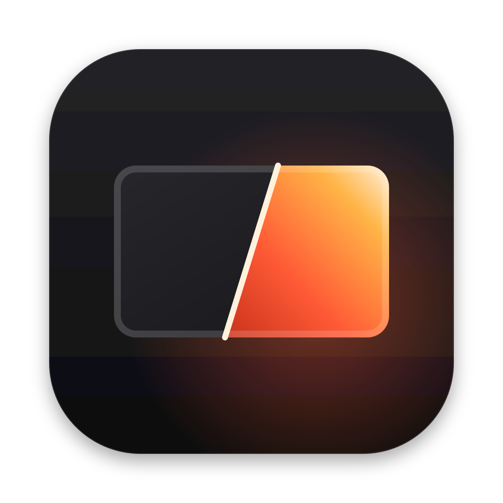

RevelaRevela a cor que você quer.
Conceito
A película. Um quadro de filme perfurado, no amarelo das caixas de filme; dentro dele a imagem se revela na diagonal, do latente ao colorido: roxo, vermelho, laranja e amarelo. A linha clara é o instante da revelação, e o corte é o antes e depois que a ferramenta mostra.
Símbolo
Película perfurada com o quadro revelado na diagonal. Perfurações sempre em cima e embaixo.

Assinatura
Símbolo + nome em Inter 750, entrelinha 1 e espaçamento −0,045em. O nome nunca é redesenhado.
An Absolute ZRO Company
Cores
Colorida, no espírito das caixas de filme, com roxo. Cor vai em ícone, brilho, ilustração e detalhe; texto pequeno fica neutro.
#FFB800 · --p-finishing#8B3FE8 · --p-finishing-2#4B1FB8#E52B1A#FF7A1A#FFF4E0#0E0E10 · preto fosco da famíliaTipografia
A mesma fonte de toda a família Absolute ZRO. Títulos curtos, tracking fechado, português direto.
Uso
- Usar os arquivos de
products/finishing/marca, sem redesenhar. - Deixar respiro em volta do símbolo de pelo menos a altura de uma perfuração, duas vezes.
- Gradiente sempre do roxo (embaixo, à esquerda) ao amarelo (em cima, à direita).
- Botão principal branco em pílula, como na família.
- Girar a película, inverter o corte ou trocar o lado revelado.
- Usar amarelo ou vermelho em texto pequeno.
- Escrever REVELA em caixa alta ou trocar a fonte do nome.
- Usar nome, logotipo ou desenho de marcas de filme (Kodak, Fuji etc.): a inspiração é só de cor.
Alternativas estudadas
Guardadas em marca/alternativas.


